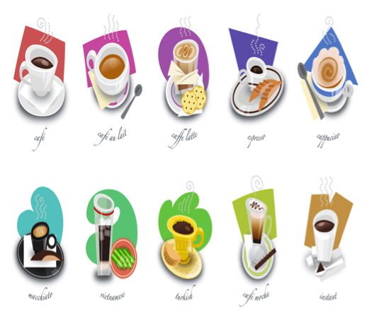

Types of Coffee

- Espresso
- Espresso Macchiato
- Espresso con Panna
- Caffe Latte
- Flat White
- Cafe Breve
- Cappuccino
- Caffe Mocha
- Americano
Recognize some of the coffees on the above? It’s great if you do, but it’s okay if you don’t. These are some of the types of coffees that you can potentially learn how to make at home! Even better it’s without spending thousands of dollars every year on brand name coffee like Starbucks or Coffee Bean.